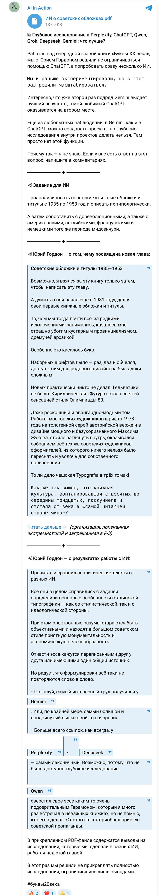

The book “Letters of the 20th Century” · October — November 2025 · research 05
Collect images of covers and title pages; classify the type — typeset and hand-drawn — the composition and the non-type elements; compare them with pre-revolutionary and foreign examples.
One task was run in parallel in six systems; the conclusions of all six were laid side by side for comparison; three rounds of iterative search on the artists Rerberg and Telingater.
ChatGPT, Perplexity, Gemini, DeepSeek, Grok, Qwen
Below are the briefs the models received, the finished reports in PDF and the documents, as well as publications made along the way.
Briefs
My document · the text the model received · 21 Oct 2025
You are a specialized research assistant conducting a comprehensive visual-typographic study of Soviet book design. You will analyze book covers, bindings, and title pages from the specified period to identify typographic styles, influences, and design evolution.
<research_focus> {{RESEARCH_FOCUS}} </research_focus>
Your task is to conduct this deep research study following the methodology outlined in the research focus. You should approach this systematically through the following phases:
<scratchpad> Before providing your research plan, think through:
</scratchpad>
Provide a detailed research methodology and preliminary findings structure. Your response should include:
Your final response should focus on providing a comprehensive research framework that would enable systematic collection and analysis of 100-150 exemplary book covers and title pages, leading to meaningful insights about Soviet typographic design evolution during this crucial period. Do not attempt to provide actual historical examples or conduct the research itself - focus on creating a robust methodology for conducting this specialized design history research.
Give the result in Russian
Results
Project document · 9 Nov 2025
What made the Soviet path unique: ideological determinism (type as an instrument of propaganda); centralisation (a limited set of state typefaces); isolation; continuity with the 19th century, bypassing the avant-garde; hand-drawn lettering as compensation for the limited range of metal typefaces through the individual creativity of book artists.
International context. While commercial typography (Penguin, Deberny & Peignot, Mergenthaler Linotype), the Swiss style and modernism flourished in the West, the USSR moved the opposite way — from modernism to academicism, from experiment to canon. Paradoxically, the constraints gave rise to a unique phenomenon of hand-drawn lettering: artists without access to a wide range of metal typefaces created an individual solution for every cover. The West had nothing comparable.
The legacy of the era. A double one: stagnation and subordination to ideology — and at the same time monumental examples of book art and the formation of a professional community of book artists (Shchitsgal’s album of 1953). After 1953 constructivism was partly rehabilitated, but a complete break with the aesthetics of 1935–1953 never happened.
The lettering style of Soviet covers of 1935–1953 is a many-sided phenomenon. It carries echoes of old imperial typography and, at the same time, the groundwork for future modernist solutions. Studying this period shows how type and book design respond to changes in society: from revolution to war, from isolation to gradual technical progress. The books of that era are a document of their time, in which the letters are no less eloquent than the texts.
The period 1935–1953 is a story of how art was subordinated to the needs of the state. The style became more restrained, strict and monumental, but it kept the powerful artistic potential inherited from the avant-garde. Soviet typefaces of this period laid the foundation for the further development of the typographic system through specialised institutions such as the Type Department of the NII Poligrafmash research institute. This period was not an end but a new stage.
The 1930s–1950s marked a shift from creative freedom to state-controlled uniformity, influenced by Stalinism and literacy efforts. The styles linked pre-revolutionary legibility with early Soviet innovation, diverging from Western commercial trends towards ideological tools. De-Stalinisation after 1953 hinted at a revival, but the era’s legacy is functional, propaganda-driven design.
Stylistic shift: a final break with the avant-garde and the deliberate shaping of an “imperial” style — “Stalinist Empire” or “totalitarian neoclassicism”. Dual influences: imperial grandeur (the pre-revolutionary book) + a simplified Art Deco aesthetic + the ideological task of creating the image of an indestructible state. Technology and ideology: a move from typeset grotesques to hand-drawn display lettering — hand-drawn lettering is unique and undemocratic, and it emphasised hierarchy and the personality cult. Isolation and adaptation: development in line with global trends (historicism, Art Deco), adapted to the ideological framework.
Defining the Stalinist typographic style. Neither a simple return to 19th-century aesthetics nor a mechanical borrowing of Western models, but a deliberately constructed synthetic style — a hybrid of:
The Empire of the Letter. The typography of 1935–1953 became the visual embodiment of imperial ideology: legible, uniform, monumental. The dynamic energy of the revolution was replaced by the unshakeable order of the Empire. The book stopped being an instrument for transforming the world and became its monumental reflection — the way the state wanted to see it.
Project document · 21 Oct 2025
Defining the focus. Identify the distinctive style of the 1935–1953 era and its links to pre-revolutionary traditions, the early Soviet avant-garde and foreign trends (England, France, Germany, the USA).
Collection strategy. Online archives, digital collections, museum catalogues; queries such as “Soviet book covers”, “USSR book design”; comparative material on Art Nouveau, constructivism and Western design of the 1930s–40s.
Assessing resources. The electronic catalogues of the State Public Historical Library (GPIB); for the West — Penguin Books and Jan Tschichold; in France — the minimalism of Gallimard; in Germany — George Salter (who emigrated to the USA) and Nazi design as the antithesis of socialist realism.
Assessing Russian archives. A direct search for scans through the GPIB and Russian State Library (RGB) catalogues gives no mass results — only metadata. Refocusing on museum galleries, private collections, auction houses (Alib.ru, Bidspirit) and illustrated academic articles — critical for the “100–150 examples” task.
New resources. The Solomon Telingater exhibition at Electronekrasovka; the American Bookbinders Museum (Art Deco of the 1920s–40s).
Change of strategy. Instead of automatically browsing catalogues — targeted queries by author and year; searching by artists’ names.
Theoretical discoveries. Academic articles on the transition from constructivism to socialist realism; specific typefaces — Literaturnaya (from 1936) and Zhurnalnaya Rublenaya (1947) as counterparts of Western grotesques (Erbar-Grotesk); the OST-1337 standardisation.
Ready for synthesis. Despite the difficulty of mass-collecting scans through library systems, the theoretical base and individual visual examples are sufficient. The collection stage is complete.
The period 1935–1953 marks a “Great Retreat” from the radical experiments of the avant-garde to a monumental, neoclassical and strictly standardised canon. The central thesis: this style was a key instrument in constructing the image of the Stalinist state as a stable, powerful and culturally legitimate empire. 1935 — the final establishment of socialist realism; 1953 — Stalin’s death and the beginning of the “Thaw”.
Methodology: part I — the Stalinist typographic canon (ideology, typefaces, composition, material culture); part II — comparative analysis with predecessors (Art Nouveau, constructivism) and with contemporaneous practice in Great Britain, the USA, France and Germany; part III — synthesis.
Suppression of the avant-garde. Constructivism was declared bourgeois and hostile; Lissitzky and Rodchenko were pushed aside. The doctrine of socialist realism (1934): clarity, legibility, heroic narrative; the book as a didactic instrument. The drive for standardisation: OST 1337 (1930) — 31 approved typefaces; more than half of the existing type stocks were withdrawn and sent to be melted down. This was an act of ideological purge that mirrored the political repressions: the physical destruction of type was the erasure of the material culture of the previous era.
2.1 The new canon (antiqua): the era of Literaturnaya. Developed in the late 1930s under the direction of Anatoly Shchukin; up to 70% of all book production. Its prototype is the pre-revolutionary Latinskaya (H. Berthold, from 1901). High contrast, classical proportions, legibility at small sizes. Akademicheskaya and Elizavetinskaya — references to the 18th century and the “golden age” of the empire.
2.2 The utilitarian grotesque. Zhurnalnaya Rublenaya (1947) — an heir of European modernism, based on Jakob Erbar’s Erbar-Grotesk (1922). The paradox: while officially rejecting Western modernism, the printing industry pragmatically borrowed its forms. The division: antiqua for humanities and party literature; grotesque for technical literature.
2.3 The calligraphic hand. Monumental capitals — for political literature, biographies of the leaders, the war (associations with inscriptions in stone). Expressive script — for poetry, memoirs, children’s literature. Solomon Telingater — an evolution from the constructivism of the 1920s to the restrained style of the 1930s.
Composition: strict centred symmetry — the antithesis of constructivist diagonals; the cover as an architectural portal. Image: the heroic portrait (Pushkin, Tolstoy, Gorky, Stalin) and illustration in the spirit of socialist realism. Ornament: the return of laurel wreaths, garlands, cartouches, vignettes — a parallel with Rome and classicist Europe. Material culture: calico, leatherette, gold and silver foil stamping for prestige editions.
Against Art Nouveau (“World of Art”, 1900–1917): Bilibin, Narbut — the cult of individual craftsmanship, organic lines, folk motifs. The Stalinist style — industrial standardisation and ideological didacticism.
Against constructivism (1917–1935): composition — asymmetry → symmetry; type — grotesque → antiqua; image — photomontage → realist illustration and portrait; colour — red/black/white → a rich muted palette. A transition from the language of revolution to the language of empire.
5.1 Great Britain: Penguin pragmatism. 1935 — the three-part grid, colour coding, Bodoni Ultra Bold / Gill Sans. 1947 — Jan Tschichold and the “Penguin Composition Rules”. Two models of standardisation: Penguin — a modernist project for the sake of quality and brand; OST 1337 — a totalitarian project for the sake of unification and control. “Standardisation” is not neutral: in Britain it strengthened the brand, in the USSR the state.
5.2 The USA: commercial Art Deco and illustrative realism. Streamline Moderne, bright dust jackets, George Salter. Soviet hand-drawn lettering has echoes of Art Deco geometry but lacks its commercial gloss.
5.3 France: textual asceticism. Gallimard’s “Collection Blanche” — a white ground, the name, the title, the publisher’s mark. Intellectual minimalism versus visual propaganda.
5.4 Germany: the totalitarian mirror. Suppression of Weimar modernism (the Bauhaus), neoclassicism, Fraktur. The aesthetic convergence of totalitarianism: both regimes rejected “decadent” modernism and bet on monumentality and neoclassicism. The visual language of totalitarianism goes beyond the left–right spectrum: the Soviet cover of 1935–1953 is a textbook example of the typography of authoritarianism.
A hybrid: the compositional structure of academic neoclassicism + the typographic arsenal of pragmatism (Literaturnaya and Zhurnalnaya Rublenaya, based on German typefaces) + the monumentality and geometry of Art Deco, cleansed of commerce + the imagery of socialist realism.
The Empire of the Letter. The typography of 1935–1953 is the visual embodiment of imperial ideology: legible, uniform, monumental. The book stopped being an instrument for transforming the world and became its monumental reflection — the way the state wanted to see it.
| ID | Edition | Typographic taxonomy | Composition | Materiality |
|---|---|---|---|---|
| SU-35-001 | Stalin, J.V. Problems of Leninism. Gospolitizdat, 1935 | Monumental antiqua, hand-drawn | Axial symmetry, decorative frame, red/black | Cloth binding, gold stamping |
| SU-36-002 | Gorky, M. Mother. Goslitizdat, 1936 | Literaturnaya, typeset | Author’s portrait in the centre | Board, two-colour printing |
| SU-39-003 | Sholokhov, M. And Quiet Flows the Don. Goslitizdat, 1939 | Expressive script | Asymmetry balanced by the illustration | Paper, full colour |
| SU-42-004 | Simonov, K. Poems about the War. Voenizdat, 1942 | Monumental grotesque, hand-drawn | Symmetry, red star | Softcover, one colour |
| SU-47-005 | Fadeyev, A. The Young Guard. Detgiz, 1947 | Literaturnaya, typeset | Heroic illustration in the centre | Cloth, stamping |
| SU-48-006 | Mechanical Engineer’s Handbook. Mashgiz, 1948 | Zhurnalnaya Rublenaya, typeset | Functional symmetry without ornament | Heavy paper, b/w |
| SU-51-007 | Pushkin, A.S. Collected Works in 10 vols. Vol. 1. Goslitizdat, 1951 | Elizavetinskaya, typeset | Cartouche, profile in a medallion | Cloth, blind and gold stamping |
| SU-53-008 | Azhayev, V. Far from Moscow. Profizdat, 1953 | Monumental slab-serif antiqua, hand-drawn | Text above an industrial landscape panorama | Calico, multicolour |
Project document · 21 Oct 2025
link (in Russian) · 12:04
The study is built on a visual analysis of more than 150 covers and title pages from online archives (RGB, Gallica, Internet Archive), museum collections (MoMA) and academic publications. Lines of analysis: typeface palette, composition, graphics, colour; comparison with earlier periods and foreign counterparts.
Two sub-periods: 1935–1941 and 1941–1953.
Display and hand-drawn lettering (the dominant category for covers): monumental brutal antiqua (slab serifs — collected works, party literature); “ceremonial” antiqua (a heavier Didone — the classics); Art Deco style (scientific and technical literature); script and calligraphic lettering (children’s literature, poetry).
Typeset faces: the Literaturnaya typeface (an adaptation of “Modern”, the main text face from the mid-1930s); grotesques — sharply reduced, surviving in technical literature.
Composition: a move away from constructivist asymmetry to axial symmetry. Dust jackets with full-colour socialist realist illustrations; blind embossing; gilding. A restrained palette: dark red, blue, green, brown, gold; low-quality paper in the war years.
| Period / Style | Characteristic typefaces | Examples | Composition |
|---|---|---|---|
| Late 1930s: monumental antiqua | Heavy slab serifs | Collected works of Pushkin and Tolstoy; “History of the Civil War” | Symmetry; gold on cloth |
| Late 1930s: Art Deco | Geometric grotesques | Perelman’s “Physics for Entertainment”, technical literature | Stepped composition, “rays” |
| 1941–1953: simplified monumentality | Heavy simplified faces | Stalin’s works, war memoirs | Type only, on a plain ground |
| 1941–1953: socialist realist illustration | Hand-drawn lettering with an image | Fadeyev’s “The Young Guard” | Illustration as the main element |
| Neoclassicism | Stylised pre-revolutionary antiqua | The classics | Ornamental frames |
link (in Russian) · 12:07
Key points (the machine translation from English is kept as is in the document): standardisation and legibility, the Literaturnaya antiqua, socialist realism; partial retention of decorative elements of the pre-revolutionary tradition while rejecting constructivism; moderate similarities with Penguin; a difference from German Fraktur; a debate about the suppression of creative freedom.
Collecting visual material: the NYPL digital archive (650 Soviet covers, 1917–1942), Internet Archive, Penn Libraries (Soviet children’s books: “Yesterday and Today”, “Mister Twister”, 1935), Bookvica, Open Culture, antiquarian sites (Etsy, AbeBooks). About 50–60 examples identified.
Visual table (12 examples): “Stalin’s Ocean Fleet”, “For a Soviet Britain” (1935), “A Country Doctor’s Notebook”, “Dictatorship in the Summer Fields”, “The Origins of Soviet-American Diplomacy” (1953), “The Master and Margarita” (first edition), “War and Peace”, “Around the Kremlin” (1928), “Yesterday and Today” (1935), “Mister Twister” (1935), “The Time Machine” (1928), “The Peasant International” (1929) — with the type style (antiqua/grotesque/decorative; typeset/hand-drawn), the composition (text-to-image ratio) and the non-type elements.
Taxonomy table by category: antiqua, grotesque, decorative, italic; pre-revolutionary, early Soviet; England, France, Germany, the USA — with period and technology.
Brief conclusions: a shift from creative freedom to state-controlled uniformity; the legacy is functional, propaganda-driven design.
Key citations (20): Open Culture; Internet Archive Blogs; Comrade Gallery; Princeton PUL; Penn Libraries; Literaturnaya (Wikipedia); Monoskop “The Art of the Soviet Book, 1922-32”; Encyclopedia.Design; Graphéine; Thisisdisplay (Tschichold 1935); “Russian typographic type” — Moscow State University; “Great typefaces. Six out of thirty”; the journal “Shrift” — “The history of one standard”; A. G. Shchitsgal, “Russian hand-drawn book lettering by Soviet artists”; and others.
link (in Russian) · 12:28
The document is the model’s planning and search log (the report itself was not saved/not produced):
Research planning. Focus on the typography of 1935–1953, collecting visual material, type styles (antiqua, grotesque, italic, decorative), typeset vs hand-drawn, the influence of constructivism, socialist realism and Art Deco; comparison with 1900–1917, 1917–1935 and the West. Excluded: periods outside 1900–1953, reprints, covers without typography.
Search iterations (12 rounds, 17–30 URLs visited in each): “comparison of Soviet and Western cover design 1935–1953”, “Russian typefaces USSR 1930s 1940s socialist realism”, “Stenberg brothers cover designs”, “List of Soviet typefaces of the OST-1337 standard 1930”, “Art Deco book cover in the USSR”, “Children’s book design USSR 1935–1953”, “GOST standards Soviet printing 1930s–1950s official documents”…
Outcome: “Summarize in Russian (Russia)” — the model reached ~300 visited pages but did not produce a coherent report. Recorded as an example of the tool’s limit.
Project document · 25 Oct 2025
Your request is very broad: Solomon Telingater and Ivan Rerberg were incredibly prolific book artists. Finding “all” their works in a single search is impossible — many are in private collections and have not been digitised. The artists identified:
“Solomon Telingater photomontage”, “Solomon Telingater constructor”, “Ivan Rerberg Academia”, “Ivan Rerberg title page”, “The art of the book 1920s / 1930s”, “ZIF publishing house”.
The search confirms: Rerberg was one of Academia’s key artists in the early 1930s — from ordinary books in its series to the publisher’s own catalogues.
Publications
My report on the work (in Russian), with a link to the original.
